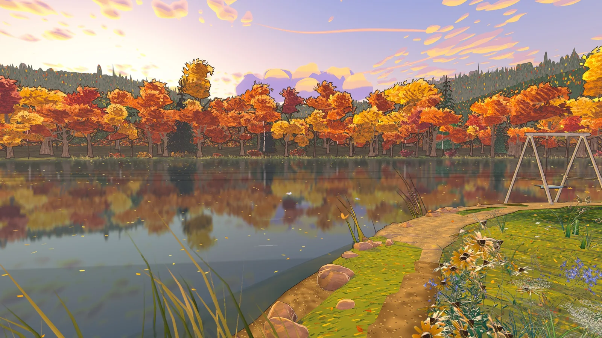
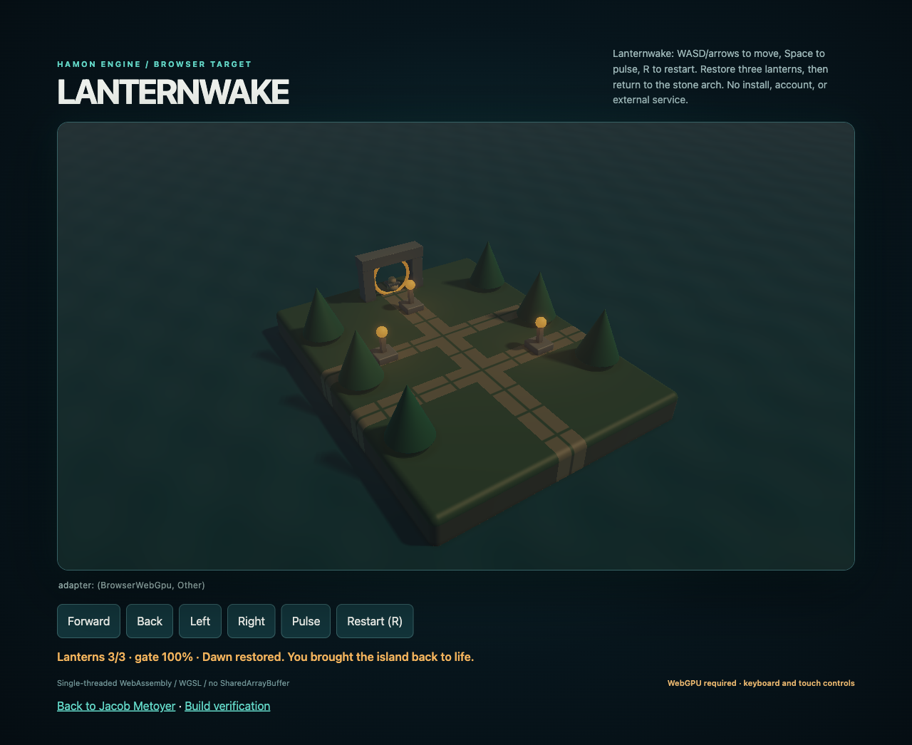

FOUNDED AND BUILT BY JACOB METOYER
HAMON A studio for living worlds.
A studio for living worlds.
HAMON builds a real-time painterly engine and the worlds that run on it. The engine is the core technology; Wildside is the first world you can step into.
Best in a browser with WebGPU. Nothing to install and no account.
CORE TECHNOLOGY
The HAMON Engine
A real-time renderer written in Rust on wgpu, built around painterly art direction. It runs natively and in the browser, compiled to WebAssembly and drawn with WebGPU.
Cel and line art
A hand-painted, Violet Evergarden-style look: flat cel colour, ink line art and painted shapes instead of photorealism.
Painted skies
Skies that move through time of day and weather, so the same place feels different when you return to it.
Living creatures
Simulated animals that move through the world, such as the robin. The wildlife is simulated, not a live feed.
Multi-scale worlds
One place explored at human, bird and insect scale, from the path under your feet to the canopy overhead.
The engine repository is private. What you can see today is published through Wildside, Lanternwake and the recorded forge on the homepage; those are snapshots of the work, not the whole engine.
FLAGSHIP · MADE FOR MARINAHACKS
Wildside
Play WildsideReal places you care about, turned into living Violet Evergarden-style worlds you explore at human, bird and insect scale, rendered live by the HAMON Engine in your browser.
Play WildsideWatch the demo and read more
The places are interpreted, imagined worlds, not surveys. This is a work in progress.
ALSO BUILT ON HAMON
Lanternwake

A small playable world: restore three lanterns on an island, then return to the stone arch at dawn. It is a published browser snapshot of an earlier engine build.
Play Lanternwake ↗See the recorded forge
WebGPU required.
IN DEVELOPMENT
Instruments for looking closely
Early, evidence-first tools that share HAMON’s approach: show what was observed, keep the uncertainty, and refuse to overclaim. These repositories are private and have no public demo yet.
Afterimage
A physical-world evidence engine. It reconstructs what is known and what might be true from fragmentary media, keeps competing explanations, and says what to observe next.
Mechanism
A motion lab for machinery. Track markers in real video, compare image-plane paths, and fit constrained kinematic models that are recomputed from the saved evidence.
Synapse
A spatial observatory for real running computational systems. The first slice is a local, read-only browser instrument for a live process tree.
FOUNDER
Jacob Metoyer
I study computer science and physics at Cal State Long Beach, and I build HAMON: the engine, the worlds and the tools around them. My research, writing and other work are on the main site.